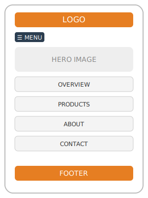

Site Name
Godanz Private Limited-This name represents a Zimbabwean company specializing in construction and interior design. It reflects professionalism, local expertise, and a commitment to modern infrastructure.
Site Purpose
The website will showcase Godanz Private Limited’s operations in Zimbabwe, with a focus on its product catalogue and customer services. The site will highlight the company’s significant contributions to Zimbabwe’s construction and interior design industry, promoting modern infrastructure and sustainable manufacturing. The goal is to create a visually engaging, informative, and interactive platform that supports both business growth and community engagement.
Planned Contents
- Homepage: Company overview and highlights.
- About Page: Detailed company history and values.
- Contact Us Page: Location information and an inquiry form for customer questions.
- Product Catalogue: Showcase of products and services offered.
Reason for Project
I chose Godanz Private Limited because it is a major contributor to Zimbabwe’s construction and interior design industry. I am personally interested in architecture and design, and this project allows me to build a meaningful and visually engaging website while practicing responsive design and JavaScript interactivity. It also highlights a local business that promotes modern infrastructure and sustainable manufacturing.
Scenarios
- As a property developer, I want to explore Godanz Private Limited’s construction solutions, so I can select reliable partners for my building projects.
- As an interior designer, I want to view the latest interior design products and materials offered by Godanz, so I can recommend innovative options to my clients.
- As a homeowner, I want to browse the product catalogue and see examples of completed projects, so I can get inspiration and choose quality materials for my renovation.
- As a business owner, I want to contact Godanz for a consultation on sustainable construction, so I can ensure my new office is both modern and eco-friendly.
- As a student interested in architecture, I want to learn about Godanz’s role in Zimbabwe’s construction industry, so I can understand local trends and career opportunities.
Color Scheme
- #e67e22 (Carrot Orange) — Used for buttons, accents, and highlights.
- #2c3e50 (Midnight Blue) — Used for headings and navigation bar.
Typography
- Open Sans — Used for body text for readability.
- Montserrat — Used for headings to give a modern, clean look.
Wireframe
Below are wireframe diagrams for the homepage layout:
Mobile View
Desktop View
These wireframes illustrate the basic structure for mobile and desktop layouts. Visual design and content will be refined in the final implementation.